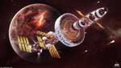
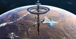
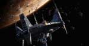
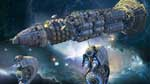
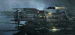
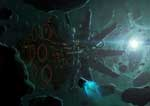

База названа в честь космічної програми Аполлон
, яка почалась у 1961 році для здійснення першої пілотованої висадки на Місяць і завершена у 1975 році.
Введена в дію у 2270 році. Це була перша база людства на початку експансії сонячної системи. Її пряме призначення було в дозаправці космічних кораблів.
Згодом використовувалась, як хаб конфедерації Землі.

Колонізація Марса — один із етапів космічної експансії людства, що включав в себе попереднє теоретичне підґрунтя проекту, будівництво різних комплексів та споруд на Марсі
і заселення них людиною. Колонізація Марса включаkf зміну кліматичних умов планети для приведення атмосфери, температури та екологічних умов до стану, придатного для
проживання земних рослин і тварин. На першому етапі - створення маленьких "марсіків" - поселень на планеті Марс. Колонізація космосу — великий крок для майбутнього людства.
Марс завжди був центром уваги як різноманітних припущень, так і серйозних досліджень в області створення колоній. Марс — планета, подорож до якої із Землі потребує найменших
енергетичних витрат з поміж усіх, не враховуючи Венери. Космічна база варта самого Бога війни Марса
була створена в 2347 році. Першою її головною задачею була оборона
зовнішнього периметру Землі. Для цього був створений Перший Флот Конфедерації, який дислокувався на орбіті Марса. Його обслуговуванням займалась космічна база
Червона Сталь. Під час наступу Пожирачів
відіграла ключову роль у виживанні всього людства.

Юпі́тер — п'ята та найбільша планета Сонячної системи. Відстань Юпітера від Сонця змінюється в межах від 4,95 до 5,45 а. о. (740–814 млн км), середня відстань 5,203 а. о. (778 млн км).
Разом із Сатурном, Ураном і Нептуном Юпітер класифікують як газового гіганта. Планета була відома людям з глибокої давнини, що знайшло своє відображення в міфології і релігійних
віруваннях різних культур: месопотамської, вавилонської, грецької та інших. Сучасна назва Юпітера походить від імені давньоримського верховного Бога Громовержця
. Експансія людства
продовжувалась і після колонізації Марса і тамтешніх знахідок людство робить скачок в розвитку. І розуміє, що потрібно розширювати свою присутність в сонячній системі і будувати нові
рубіжі задля перемоги над ворогом і виживанням. Так була побудована в 2502 році на орбіті Юпітера космічна база Рубіж, як і Червона Сталь мала оборонний-військовий характер.
Була точкою дислокації Другого Флоту Конфедерації.

Євро́па (дав.-гр. Ευρώπη, або Юпітер II) — супутник Юпітера, найменший з чотирьох галілеєвих супутників. Відкрита 1610 року Галілео Галілеєм[4] і, можливо, незалежно від нього Симоном Маріусом.
Протягом століть за Європою велися все більш різнобічні спостереження з допомогою телескопів, а починаючи із 1970-х років — і космічних апаратів, які пролітали поблизу.
За розмірами Європа поступається Місяцеві. Вона складається переважно з силікатних порід, а в центрі має залізне ядро. Поверхня складається з льоду і є однією з найбільш гладких у Сонячній системі;
на ній дуже мало кратерів, але багато тріщин. Молодість і гладкість поверхні стали причиною появи гіпотези, що під нею розташовується водяний океан, в якому не виключена наявність мікроскопічних
живих організмів. Супутник має вкрай розріджену атмосферу, що складається переважно з кисню. Після появи Другого Флоту Конфедерації і побудови космічної бази Рубіж. Виникла необхідність
логістики тобто матеріально-сировинного забезпечення. Доставка сировини з Землі чи Марса займала багато часу і енерго-ресурсів. У звязку з цим було прийняте рішення про створення космічної бази
Європа. Назву було дано в честь супутника Юпітера Європа
. База мала мобільний характер і нагадувала великий завод по переробці корисних копалин. Завдяки їй усі бази і флоти,
які знаходились поза зоною астероїдного поля були забезпеченні водою, киснем і матеріалами першої необхідності.

Плуто́н (134340 Pluto) — найбільша відома карликова планета Сонячної системи та найбільший транснептуновий об'єкт, перший відкритий об'єкт поясу Койпера. Дев'яте за розміром та десяте за масою
небесне тіло, яке обертається навколо Сонця (без урахування супутників планет).Як і більшість тіл у поясі Койпера, Плутон складається здебільшого з каменю й льоду і є відносно малим (діаметр
близько 2374 км). За масою він поступається Місяцю вп'ятеро, а за об'ємом — утричі. Орбіта Плутона має великий ексцентриситет (0,25, тобто, вона доволі витягнута) і значний нахил до площини
екліптики (17,1°). Через витягнутість орбіти Плутон то наближається до Сонця на відстань 29,6 а.о. (4,4 млрд км) і опиняється ближче, ніж Нептун, то віддаляється на 49,3 а.о. (7,4 млрд км).
Плутон перебуває в стабільному орбітальному резонансі з Нептуном, тому їхнє зіткнення виключене. З дня його відкриття 1930 року й до 2006 року Плутон вважали дев'ятою планетою. Однак
наприкінці XX і на початку XXI століття в зовнішній частині Сонячної системи були відкриті інші масивні об'єкти, у зв'язку з чим 2006 року Міжнародний астрономічний союз вперше ухвалив
формальне визначення терміну «планета». Плутон не відповідає цьому визначенню і був зарахований до нової категорії карликових планет разом із Еридою та Церерою. Плутон мав ідеальне розташування для
побудови космічної бази нового типу. В 2631 році була побудована космічна база Кинжал і космічний флот швидкого реагування. В завдання бази входило розвідка границі сонячної системи, а також
локалізацію і затримку ворога до прибуття основних сил Землі.

Дредноут (англ. Dreadnought) - володар космічних баталій; мільйони тонн металу, кераміки та полімерів, що володіють вогневою міццю, здатної вражати ворожі судна подібного класу.
Вогнева міць дредноута полягає в довжині його основного знаряддя. Довжина судна до кілометра, довжина знаряддя порівнянна з розмірами корабля. 800-метровий прискорювач маси здатний
розганяти двадцятикілограмовий снаряд до швидкості 4025 км / с (1,3% від швидкості світла), при цьому скорострільність знаряддя - 30 пострілів в хвилину. Кінетична ударна сила
кожного снаряда еквівалентна 38-кілотонн заряду тринітротолуолу, що досить для знищення середніх розмірів міста з населенням в 500000 чоловік. Дану базу (згодом його було прирівняно до класу кораблів)
було створено в 2655 році після відправлення еспедиції в галактику Альфа-Центавра
. Завдяки двигунам нового покоління, швидко переміщувався в задану точку сонячної системи. На борту корабля розміщувалось
2200 членів екіпажу. Також мав посадкові палуби на яких розміщувалось 30 винищувачів, 10 бомбардувальників і 5 тяжких корветів. Виконував функцію основного бойового кулака Землі. В 2657 році було підсилено 5 крейсерами і
10 лінкорами.
© 2017, Galaxy Battle: Human Revenge
All trademarks and registered trademarks appearing on this site are
the property of their respective owners.